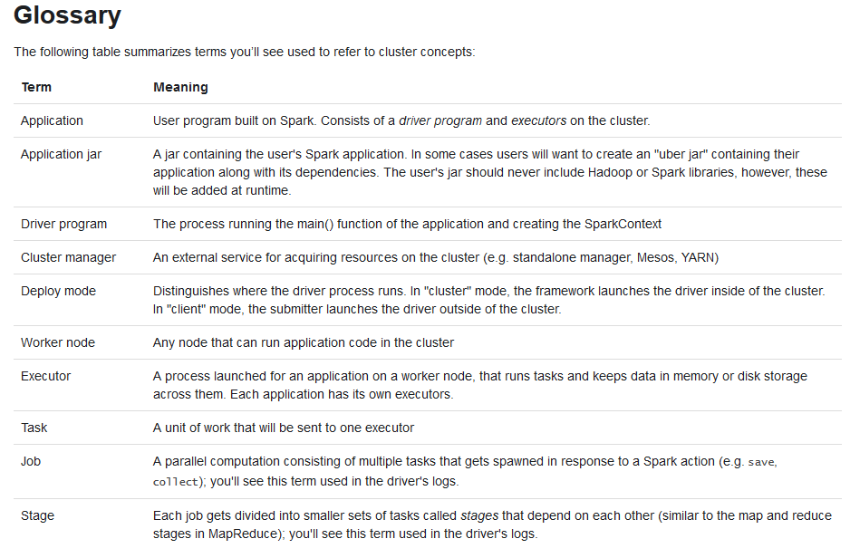
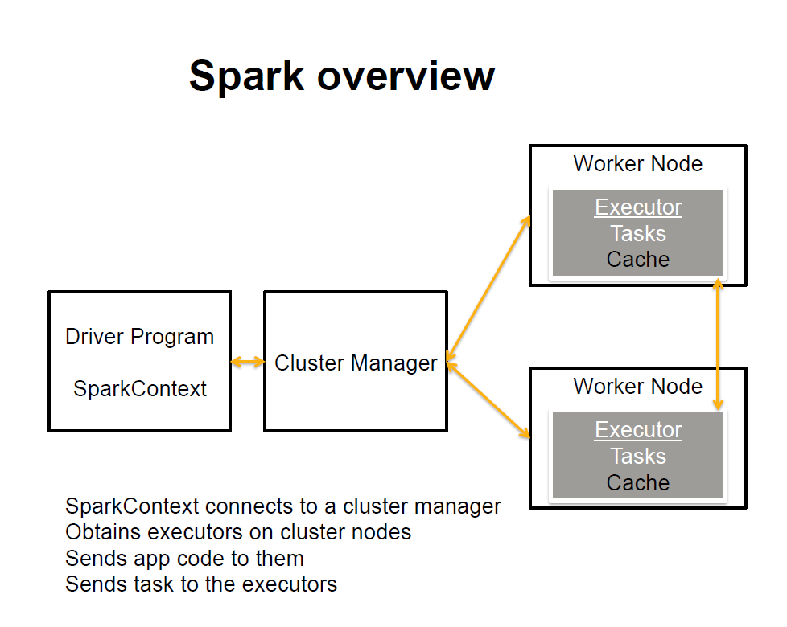
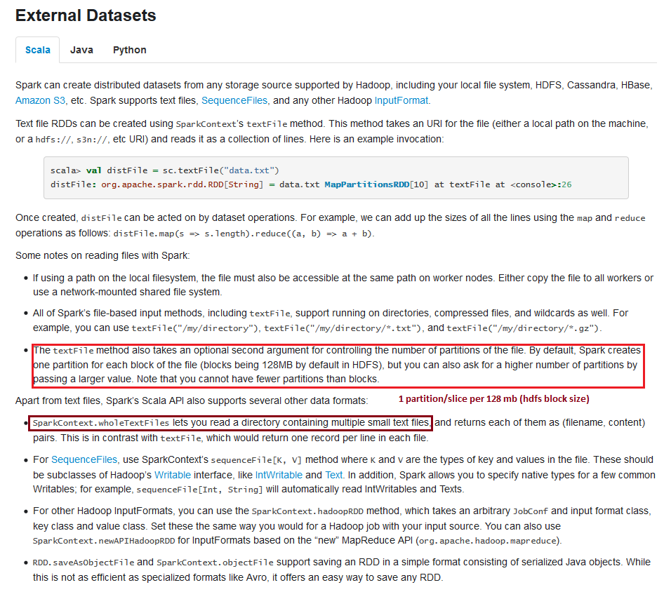
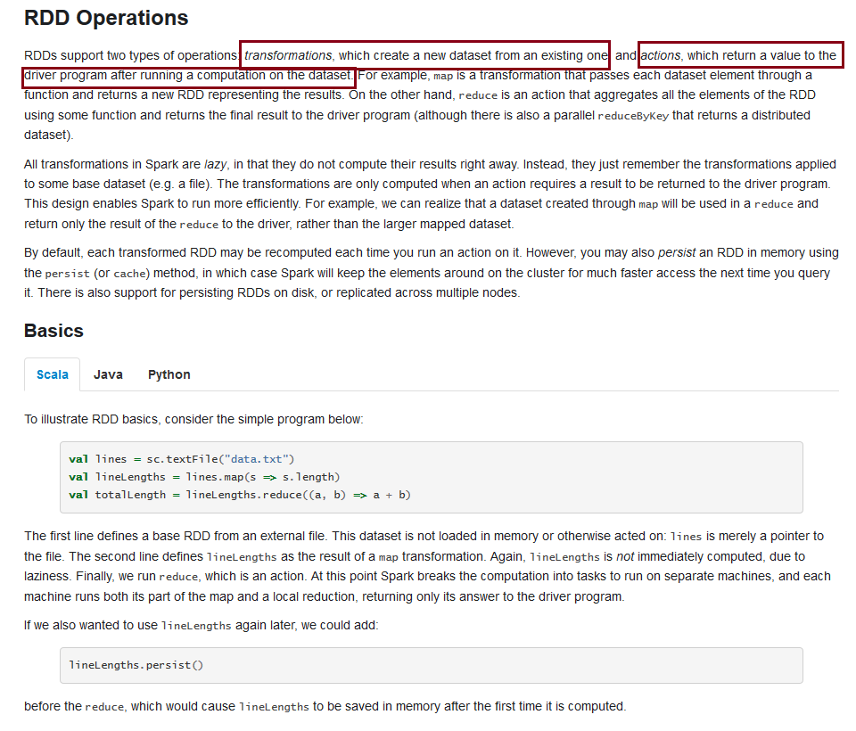
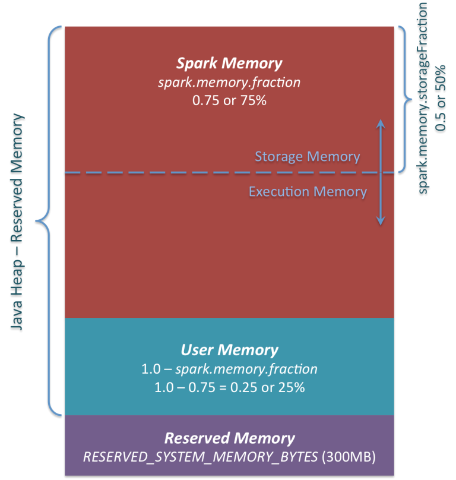
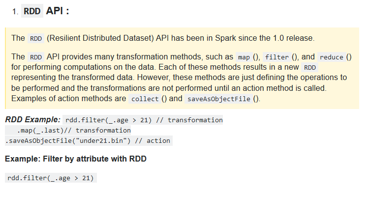
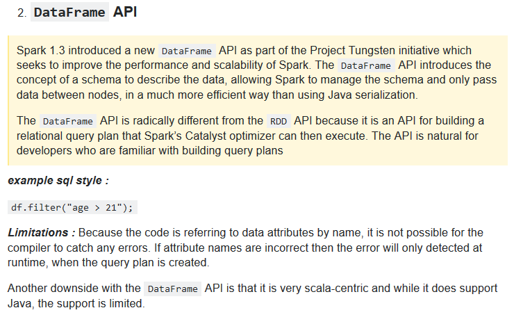
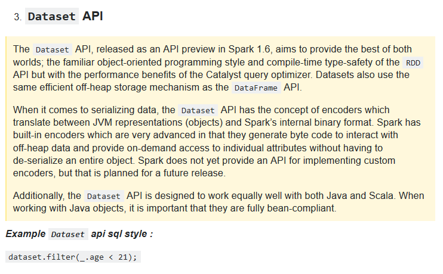

| apache.org | Apache Spark Official Notes     |
| cloudera.com | Apache Spark key concepts from Cloudera |
| databricks.com | Apache Spark key concepts from Databricks |
| databricks.com | Sorting a petabyte using Spark |
| wordpress.com | Apache Spark resources |
| mapr.com beekeeperdata.com github.com github.com | Spark examples The 5-Minute Guide to Understanding the Significance of Apache Spark |
| 0x0fff.com 0x0fff.com | Spark architecture  |
| mit.edu madhukaraphatak.com hortenworks.com slideshare.net | Spark Catalyst Optimizor |
| spark.apache.org fastutil.di.unimi.it | Spark tuning and usage of fastutil collections |
| dzone.com | SBT Setup for Scala 2.10 and Spark |
| stackoverflow.com |
Spark RDD method 'collect' is necessary before calling 'foreach' etc
Method 'collect' is used to bring data back to driver program, before doing any data operation
|
| stackoverflow.com | Spark : using singleton instance of the SQLContext before: import sqlContext.implicits._ |
| stackoverflow.com github.com | Spark : sum of row values |
| github.com apache.org | Spark : streaming guide and examples |
| gitbook.com | Spark : best practices and tuning |
| stackoverflow.com stackoverflow.com tutorialspoint.com | Creating Spark DataFrame using StructType/StructField or Simple Objects |
| apache.org stackoverflow.com databricks.com |
Apache Spark has three types of API



|